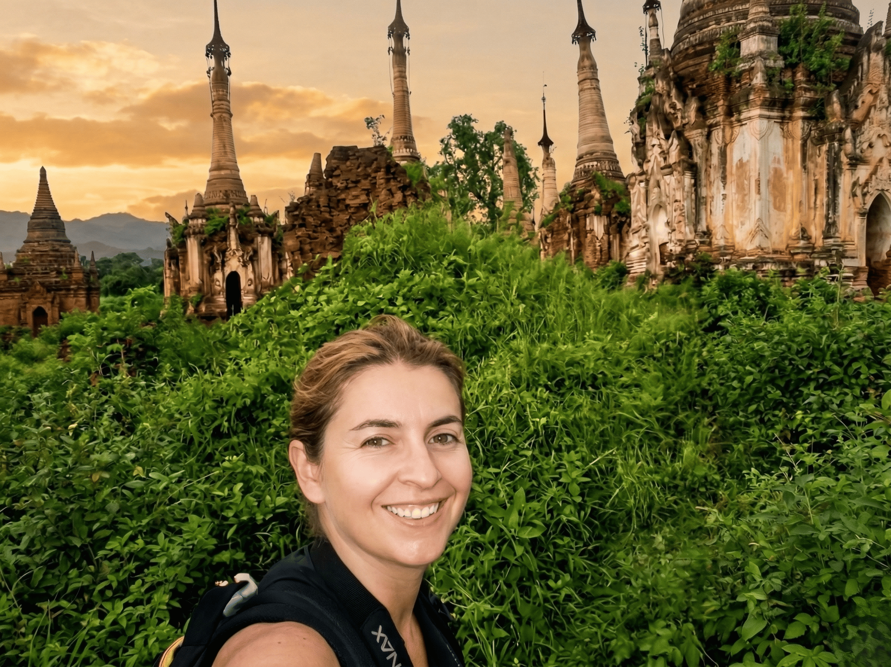
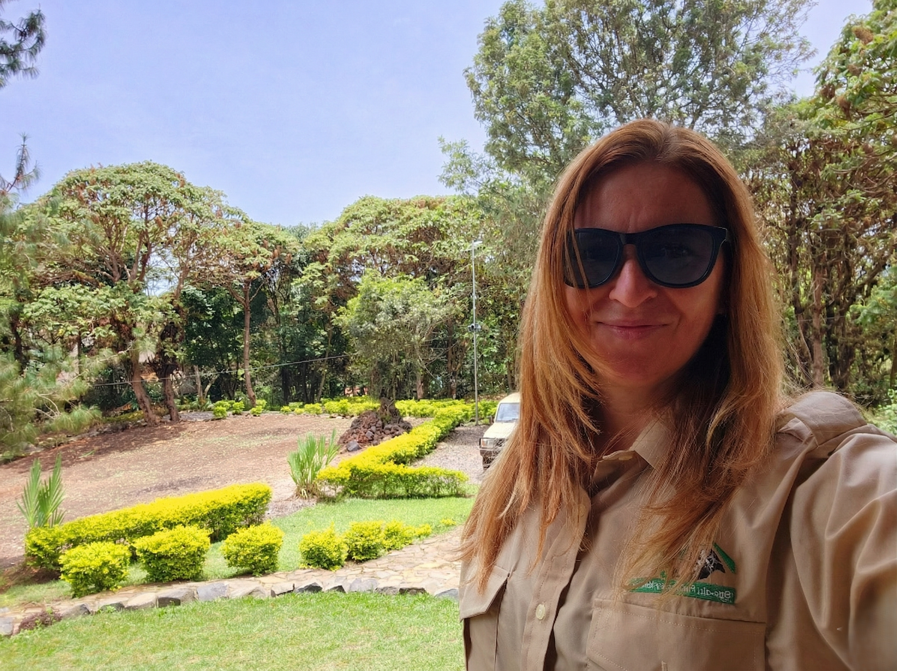
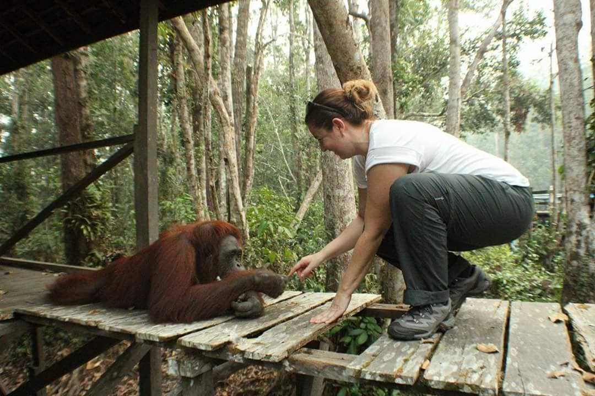
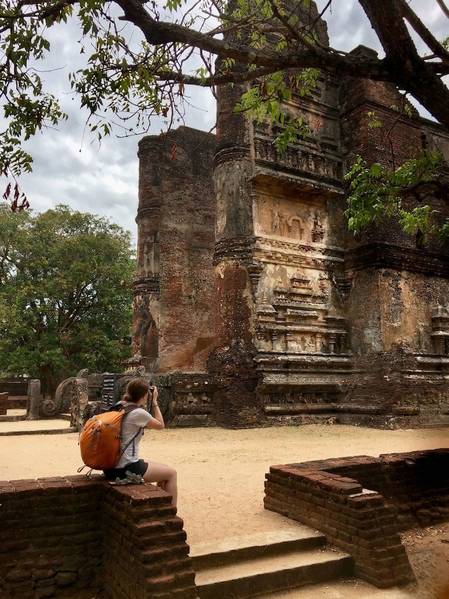
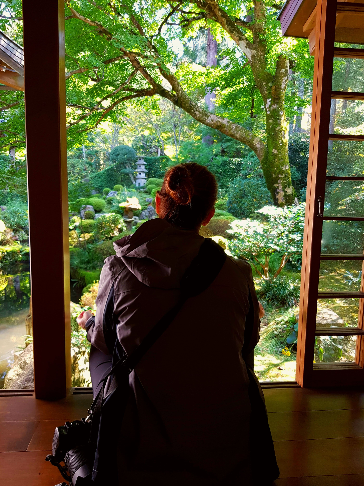
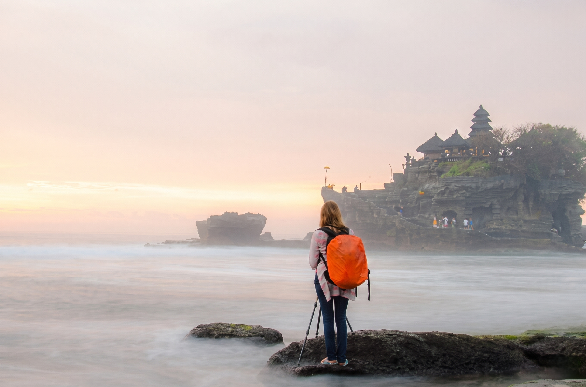
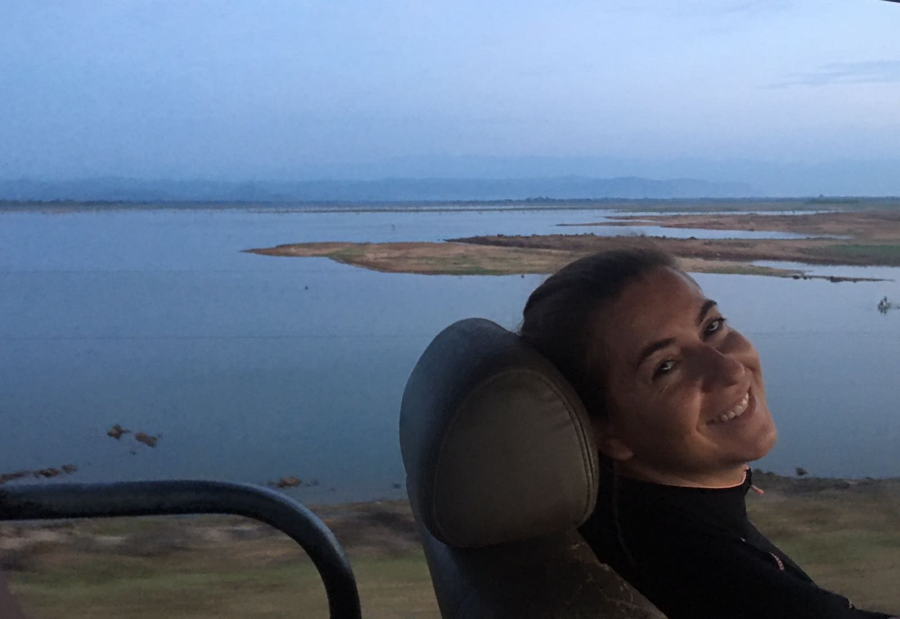
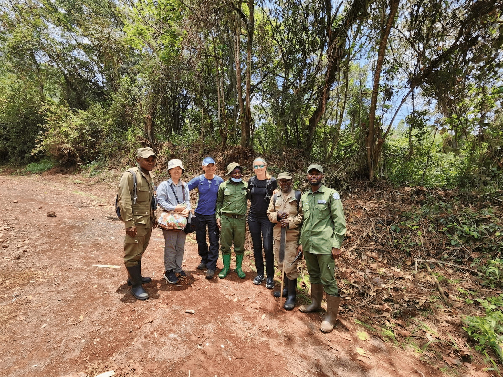

En construcción...
...en el sentido más literal de la palabra.

No esperes encontrar aquí una guía de viajes convencional. No busques consejos sobre qué visitar, reseñas de hoteles o listas de precios. Odio las webs interminables dónde buscar algo se convierte en una retahíla de florituras, dónde buscar información es arduo complicado...me gusta ir al grano.
Este espacio no nace para decirte a dónde ir, sino para compartir lo que yo he visto. Porque he aprendido que a veces, las cosas más pequeñas y que parecen mas insignificantes, son las que tienen el poder de producir los cambios más grandes...porque quizás el pueblo cerca de tu casa en la provincia de Guadalajara (España), te va a sorprender mas que la India.
Soy una apasionada de la naturaleza, y también una profesional con más de 25 años de trayectoria en Comercio Exterior y Logística Internacional. Dos mundos que, para muchos, parecen opuestos, pero que en mi visión son inseparables. Mi carrera me ha enseñado que la verdadera eficiencia no trata solo de mover mercancías de un punto a otro; trata de hacerlo con responsabilidad y respeto.

Mi Propósito: Logística para la Conservación
Mi sueño siempre ha sido unir estas dos facetas de mi vida. Camino por ciudades, pueblos o Parques Nacionales no solo como viajera, sino con la mirada crítica de quien entiende los engranajes que mueven el mundo, la geopolítica. Guste o no, formamos parte de ella. Además, estoy plenamente convencida de que:
las estrategias logísticas avanzadas reducen el impacto ambiental.

Esta bitácora es el cuaderno de viaje de una logística explorando rincones. Aquí, gran parte de cada fotografía es el resultado de una gestión que busca, por encima de todo, la conexión armónica entre la operatividad humana y la conservación del entorno. No existe conservación sin interacción por mínima que sea, con el ser humano.
Explora expediciones